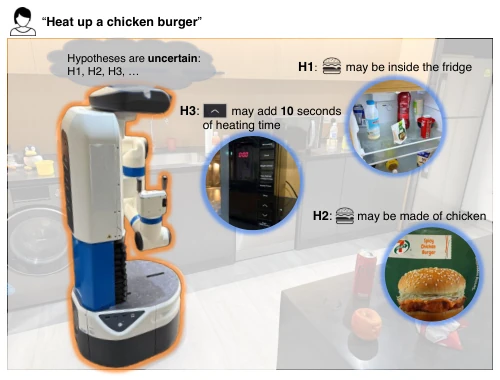
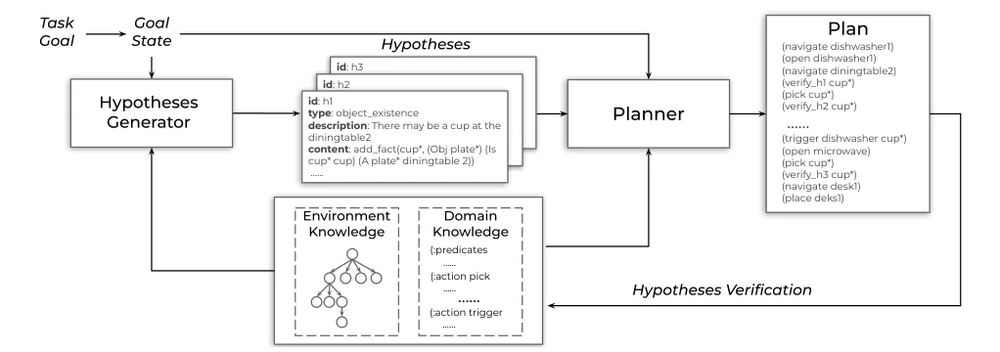
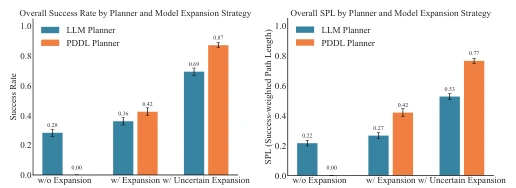
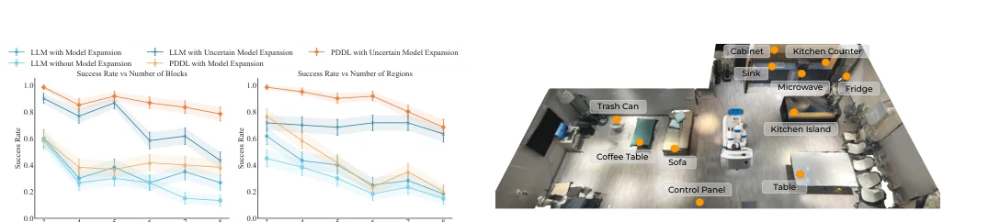
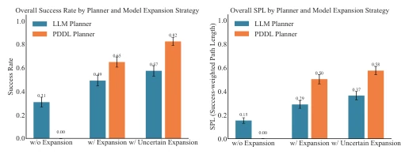
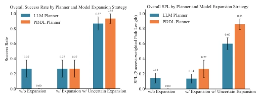
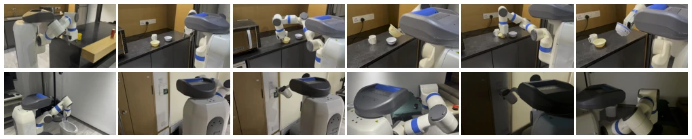
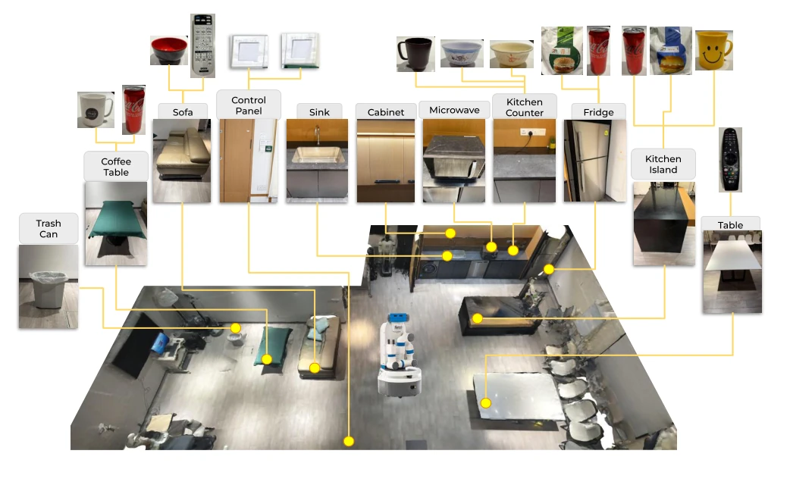
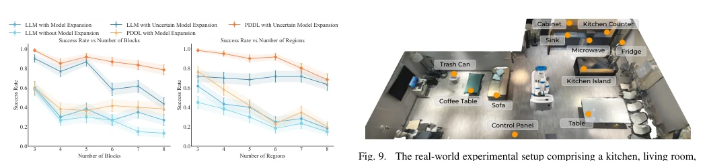
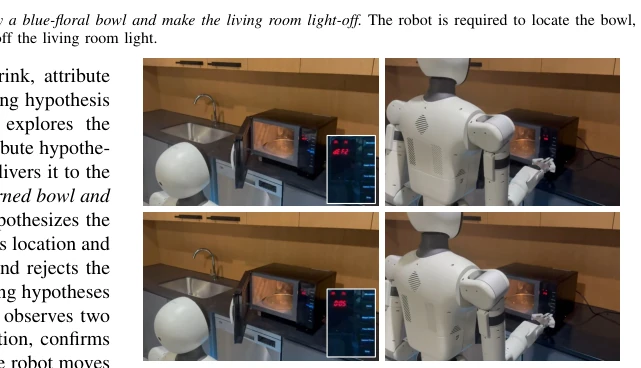

This paper attempts to patch the knowledge gap in open-world planning using a "hypothesis-driven" approach, which is quite an appealing idea. Treating LLM-generated knowledge as "hypotheses to be verified" rather than facts is indeed more reliable than blindly trusting hallucinations, especially when combined with the rigor of symbolic planners. However, the authors' handling of "uncertainty" appears somewhat idealized: assuming optimistic verification results during planning and only replanning upon execution failure may not be robust enough in high-risk scenarios. Additionally, relying on the LLM to generate verification conditions itself is a black box; if the LLM guesses "how to verify" incorrectly, the entire closed loop breaks. Overall, it is a decent engineering attempt, but there is room for improvement in theoretical risk sensitivity; it would be better if more fine-grained probability calibration were introduced in the future.
Home service robots face the significant drawback of knowledge gaps in real-world environments. Traditional planning relies on preset models [5, 20, 21], failing once encountering unknown objects or action effects. Although LLMs can perform zero-shot reasoning [6, 18], they tend to confuse facts with hallucinations when information is incomplete. Existing work attempts to extend models using LLMs [1, 7, 17], but mostly involves passive updates; ignoring uncertainty leads to silent failures during plan execution. This violates the Bayes-adaptive perspective in decision theory [19], which suggests planning should be active to acquire information. Therefore, how to combine structured reasoning with LLM's open-world knowledge and explicitly handle the uncertainty of model extension has become a key issue.

Fig. 1. Illustration of a service robot operating in an open-world scenario. To fulfill tasks such as “heat up a chicken burger”, the robot must expand its abstract world model and account for uncertainty during planning.
The HUME framework comprises four core stages. First, initialize the symbolic model (PDDL + scene graph). Second, the LLM generates a set of hypotheses regarding object existence, attributes, or action effects based on task instructions and discrepancies with the current model. In the planning stage, hypotheses are treated as uncertain variables; through all-outcomes determinization, verification actions are converted into deterministic planning problems, and high costs are imposed on actions dependent on unverified hypotheses to guide the planner to verify first. In the execution stage, VLM or perception modules are called to verify hypotheses; if verification fails, beliefs are updated and replanning is triggered. This process transforms model extension from static generation to a dynamic active verification loop, achieving the interleaving of task execution and knowledge acquisition, effectively solving knowledge blind spots in open worlds.

Fig. 3. Overview of the HUME. The robot iteratively generates hypotheses to expand its model, plans with a model augmented by uncertain hypotheses, and executes actions to verify and update these hypotheses using newly acquired observations.

Fig. 6. Simulation Results on Block Processing World: Success Rate and Success weighted by Path Length (SPL). C. Results and Analysis in Simulation We evaluate the proposed approaches in both the Block Pro- cessing World and the AI2-THOR mobile manipulation tasks. As shown in Fig. 6, explicitly representing and performing model expansion is critical for effective planning under incom- plete world knowledge. Both the LLM-based planner and the formal PDDL planner achieve substantial performance gains when hypotheses are introduced and maintained, while plan- ners without model expansion consistently fail, demonstrating that static initial models are insufficient for open-world tasks. The formal planner benefits from explicit hypothesis repre- sentation which restores solvability, whereas the

Fig. 9. The real-world experimental setup comprising a kitchen, living room, and dining room, with a Fetch mobile manipulator.
Experiments cover simulation and real-world robots. Simulation includes Block Processing World and AI2-THOR mobile manipulation; real-world uses Fetch robot and Autolife S2 humanoid robot. Six baselines were compared, including with/without model extension and with/without uncertainty awareness. Results show that HUME significantly outperforms no-extension and deterministic extension methods in both Success Rate and SPL. The microwave operation experiment demonstrates the robot's ability to dynamically correct action effect hypotheses through interaction. Ablation analysis indicates that uncertainty awareness is more critical for performance improvement than simple model extension, especially in complex tasks, proving the effectiveness of the active verification mechanism.

Fig. 8. Simulation Results on Mobile Manipulation in Unknown Environ- ments: Success Rate and Success weighted by Path Length (SPL)

Fig. 10. Real-World Experiment Results: Success Rate and Success weighted by Path Length (SPL)

Fig. 12. Snapshot of completing the task T5: Throw away a blue-floral bowl and make the living room light-off. The robot is required to locate the bowl, identify the blue-floral pattern, and determine how to turn off the living room light.

Fig. 14. Real-world experimental setup
其他图片Other Figures

Fig. 7. Simulation Results on the Block Processing World: Performance Trends with Varying Numbers of Blocks and Processors.

Fig. 13. Demonstration of a robot discovering microwave button functions through interaction. 5 seconds, prompting the robot to revise its hypothesis. The updated hypothesis is then used for subsequent planning and execution without requiring further verification, successfully setting the time to 40s. Further details are provided in the Appendix and video.